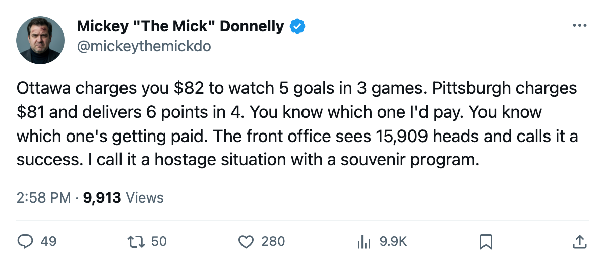
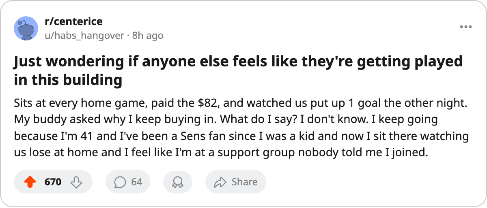

THE $29.36M POINT: YOU PAY $82 IN OTTAWA TO WATCH THIS
The worst cost per point in hockey, 15,909 bodies showing up, and a front office that reads the queue as applause
 Mickey "The Mick" DonnellyColumnist, ex-goalie · The Penalty Box
Mickey "The Mick" DonnellyColumnist, ex-goalie · The Penalty Box
Ottawa's front office for charging $82 on the worst cost per point in hockey and calling 15,909 butts a vote of confidence

Ottawa's cost per point is $29.36M. That's the worst number in this league and the building sits at 15,909.
 Ottawa Senators has won 1 game, lost 2, scored 5 goals, allowed 8. Three outings, 2 standings points, $58.72M on the books. The Contract Ledger calls it $29.36M per point.
Ottawa Senators has won 1 game, lost 2, scored 5 goals, allowed 8. Three outings, 2 standings points, $58.72M on the books. The Contract Ledger calls it $29.36M per point.  Washington Capitals is second at $28.44M and at least they tried. Washington is 0 and 2 and that is its own disaster column.
Washington Capitals is second at $28.44M and at least they tried. Washington is 0 and 2 and that is its own disaster column.
Here's the comparison that should embarrass whoever picks the ticket price in Ottawa.  Pittsburgh Penguins charges $81. You get 6 points in 4 games, 11 goals for, 10 against, on $48.92M of payroll. Pittsburgh's cost per point: $8.15M. Ottawa charges $82. Ottawa pays $58.72M. The product is 2 points to Pittsburgh's 6.
Pittsburgh Penguins charges $81. You get 6 points in 4 games, 11 goals for, 10 against, on $48.92M of payroll. Pittsburgh's cost per point: $8.15M. Ottawa charges $82. Ottawa pays $58.72M. The product is 2 points to Pittsburgh's 6.
The attendance is 15,909. They fill it anyway. The seats are not empty and that is what I cannot get past. If 15,909 people hand over $82 on a night when the product is 2 points in 3 games, the front office reads that money as a vote of confidence. It is not. It is Stockholm syndrome with a ticket stub.
The Morale Scale puts Ottawa at 92.1, dead middle of the league. Not one man in that locker room sits on the Bureau's 15 lowest. This is not a room problem, a trade problem, or a development problem. It is a payroll problem and a pricing problem, and 15,909 people keep solving both the wrong way.
I wrote in May that Ottawa turns a profit on the cheapest roster in the division. The profit is real: $23.06M on $32.83M in revenue. Nobody in that building is losing money except you. You are the one paying $82 for 5 goals in 3 games while Pittsburgh Penguins hands you 6 points at $81 and you say nothing about it because you like the scarf.
Ottawa Senators hosts  Carolina Hurricanes on Thursday. Carolina has 7 points in 5 games and sits top of the Southeast. Ottawa needs a point here or $29.36M gets worse.
Carolina Hurricanes on Thursday. Carolina has 7 points in 5 games and sits top of the Southeast. Ottawa needs a point here or $29.36M gets worse.

